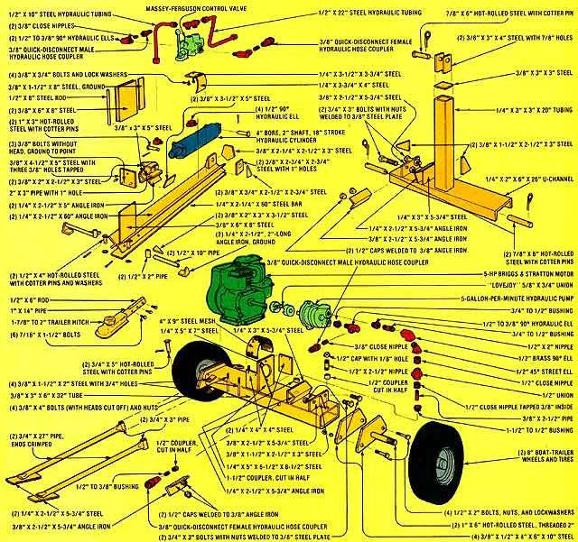
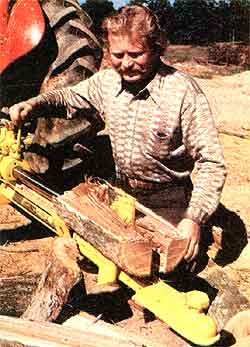
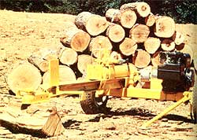
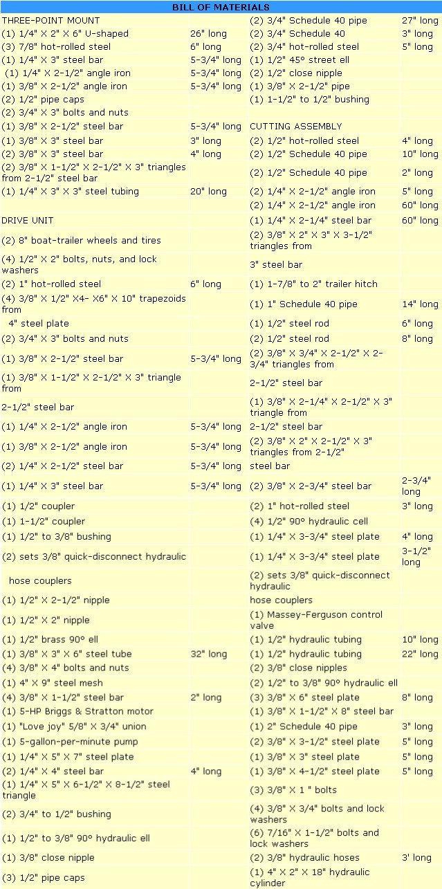

From the moment (over eight months ago) when MOTHER's research team first planned to construct a hydraulic log splitter, the boys had far more in mind than mere economy. Of course, our inventors were bent on conserving your pennies every step of the way ... but they also hoped to whip up a log lopper with professional features-plus a few capabilities that even the top-dollar models can't boast-while limiting the cost to about half that of an equivalent ready-made unit. And that's just what they've done!
You'd have to fork over well in excess of $1,000 to buy a splitter that can do the kind of work MOTHER's firewood cracker is capable of handling. With almost 12 tons of force at the cylinder, this slicer divides logs as big as two feet in diameter and 21 inches long in less than five seconds. In fact, during our test sessions out at MOTHER's Eco-Village property, we didn't encounter a single oak chunk that demanded full power from the machines 5-HP gasoline-or, with a few adjustments, alcohol-powered engine.
But sheer splitting power isn't all that our fireplace feeder has going for it. We don't know of another machine-at any price-that's as versatile as this unit. After all, MOTHER's mechanical lumberjack will work for you in three different modes!
Because its wheels are full-size, heavy-duty boat-railer items, this splitter can be towed to a job by simply attaching its hitch to a 1-7/8" or 2" ball on your car or truck. (In fact, in many states a single-use, unsprung trailer is exempt from licensing . . . but be sure to check with your state officials before towing the splitter.) The nonce you arrive at the old woodlot-you can either split wood with the assembly latched in place, or undo the hitch and roll the motorized maul closer to your work. (To make moving easier, a pair of fold-out handles are attached to the splitter's beam.)
If, however, your downed trees happen to be on the other side of a little rough land-and therefore inaccessible to the wheeled wood chopper-just loosen two 3/4" pinch bolts, slide the cutting assembly away from the chassis (which is held upright by handy swing-out braces), and haul the workin' parts back into the forest with you. The chopping unit can-with the addition of hydraulic hose-be utilized at a distance of up to 40 feet from the engine, wheels, etc.
There's another benefit to separating the "chopper" from the chassis, too. If you happen to be working on particularly large logs-which would be a real strain to lift up onto the splitter-you can just lay the cutting assembly on the ground (where it will be held steady by its handles) and roll the logs into position.
Finally, if you own-or have access to -a tractor with a three-point hitch and hydraulics, you won't even need to buy a motor, pump, reservoir, chassis, or wheels! You can simply build the beam, cutting parts, and three-point mount ... and reduce the cost of your tractor-powered lumber slicer to no more than $250!
HOW DOES IT DO IT?
The heart of MOTHER's splitter (in its completely self-powered form) lies in the matched combination of a four-inch-bore, two-inch-shaft, 18-inch-stroke cylinder and a five-gallon-per-minute, 2,000-PSI pump. We purchased both of these items, over the counter, from a dealer for the Amerind-MacKissic Company (Dept. TMEN, Parker Ford, Pennsylvania 19457) for $300. There's little doubt that an enterprising scrounger could mix and match new, used, or surplus parts, and get similar results for far less money ... but we felt that our splitter should be built from off-the-shelf parts, to keep cost estimates well on the "high" side.
A full roller-bearing Briggs & Stratton power-plant drives the pump through a flexible union, and the two parts are aligned by simply inserting shims under the motor. (It's easy to get within the .030-inch acceptable tolerance by using cut-to size scrap rubber as a shim . . . and the resilient material also helps to damp any vibration.)
Once the motor is started and brought up to speed, the pump draws hydraulic fluid from the reservoir (the interior of the entire wheel-supporting frame of the splitter) up through pipe fittings welded into the top of the oil tank, and then forces the liquid-by way of a hydraulic hose-to the valve mounted atop the piston-drive unit. This "cylinder control"-which we purchased from a Massey-Ferguson tractor dealer for $40-allows the operator of the wood chopper to have fingertip command of the drive-piston's action.
To help keep logs in position for splitting, the beam that supports the cylinder and cutting wedge incorporates a V-shaped wood-holding trough. By setting two five-foot lengths of 2-1/2" angle iron so that their 90° bends touch-and adjusting the attitude of the two pieces so that one of the two formed angles can be bridged by a 2-1/4"-wide, five-foot-long section of steel bar-a channel of about 125° is formed. (Not only does this groove cradle the logs . .. it also makes a cozy home for the hydraulic cylinder.)
Furthermore, the triangular enclosure formed by the two lengths of angle iron and the steel bar is the correct size to accept an approximately 14"-long section of 1" Schedule 40 pipe. Once the trailer hitch is welded to this tubing, the assembly can be slid inside the triangular beam ... where-after both items have been drilled and tapped-the towing parts can be securely bolted in place.
The cylinder itself is anchored to a web of 3/8" steel plate-on the end of the beam opposite the hitch-with a 1" hotrolled steel pin. On the "piston end" of the pusher, the shaft rides in a 3" length of pipe (located with another 1 " pin) which is welded to the 318"-thick drive plate and to a triangular runner that's shaped to slide on the beam. Thus the head of the cylinder's shaft "tracks" smoothly on the beam while it extends to slice a chunk of firewood.
In order to hold logs firmly in the jaws of the splitter, the drive plate also has pins in it. Each of the three "teeth" was formed by cutting the head from a 3/8" bolt, inserting the uncut end in an electric drill, and spinning the fastener down-to a sharp point-against an abrasive surface. Then the plate was drilled and tapped to hold the threaded teeth. Should one of the spikes break off, a replacement can be threaded into the steel plate.
Another feature which no store-bought splitter-in the price range of MOTHER's unit-can claim is interchangeable heads. Not only does this capability make it possible to substitute a three- or four-way cutter to section logs more quickly . . . but it also makes sharpening the edges of the blades an easy operation, since the different heads can be removed and honed on a bench grinder. Each cutter slides right over the permanently affixed carrying head, and rests securely on the beam.
In the course of designing and building the "super-splitter", MOTHER's fabricators often opted for materials with a considerable margin of safety and strength. Logging tools see truly grueling use, so the extra-sturdy components are our way of being sure that this machine will last!
For example, most splitters have small wheels mounted on tiny axles. But our unit sports 8" rollers mounted-with nuts and lock pins-on 1 "-thick shafts. What's more, those heavy-duty axles are welded to 3/8"-thick plates . . . which are, in turn, bolted to the 3/8"-thick end pieces on the reservoir. Thus MOTHER's splitter features an especially rigid chassis . . . which can also be adjusted-by inserting shims between those bolt-together plates-for camber and toe-in!
Of course, when you use the best materials, you don't get a bargain-basement piece of equipment. There are-as mentioned before-several ways one could economize on the expense of materials, but even when it incorporates top-quality components, this splitter still only costs about $600 . . . and we think you'd be hard pressed to beat it for three times the price.
After all, MOTHER's motor maul can split as many as two cords of wood per hour, and that amount of fuel-as Lloyd Otis points out in "Firewood Is Big Business" on page 94-could bring in a tidy extra income. Or you could simply rent out your log lopper to neighbors (who are bound to be happy to pay for the use of this labor saver) to produce a goodly return on your initial investment.
Then, when you're ready to bring in your own winter's wood, you can take the time you would have spent swinging a maul and use it to just kick back and enjoy the turn of the leaves.
Plans for the Log Splitter are available on the website or by calling 800-234-3368.
|
 The easiest and least expensive way to build and use MOTHER's hydraulic log splitter is to construct only the three-point tractor mount and the cutting assembly, and let your tractor be the power source . |
 But MOTHER's log lopper will do even more in its completely self-powered form. You can latch the hitch to your car or truck and tow the splitter to the trees . . . where it will either cut wood while still mounted to the hitch, or can be detached and rolled up to the job . . . or you can pull the entire cutting assembly away from the chassis to tackle tougher tasks. |
 |
|
 |
|
|